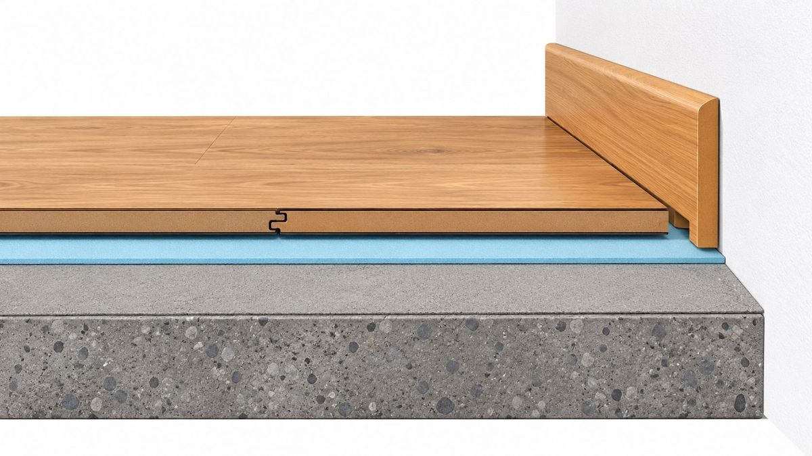

для квартиры достаточно класса 32 толщиной 8–10 мм на подложке 2–3 мм. Перепад основания не должен превышать 2 мм на 2 м — иначе любой ламинат заскрипит через 3–6 месяцев. На 60 м² нужно 63 м² покрытия с запасом 5 %, это 60 000–190 000 руб. вместе с подложкой, плинтусом и работой.
Классы 31, 32, 33: что реально нужно квартире
| Класс | Нагрузка | Срок в квартире | Цена за м² |
|---|---|---|---|
| 31 | спальня, кабинет | 5–7 лет | 700–1 200 руб. |
| 32 | гостиная, детская, коридор | 10–12 лет | 900–1 600 руб. |
| 33 | кухня, прихожая, офис | 15–20 лет | 1 800–3 200 руб. |
Класс означает износостойкость верхнего слоя, а не толщину. Для спальни 31 класса хватает: там ходят босиком и в тапочках. В коридоре, где за день проходят 40–60 раз, 31 класс сотрётся за 4–5 лет, а 32 продержится 10–12.
Толщина: 8, 10 или 12 мм
| Толщина | Допустимый перепад | Звук | Когда брать |
|---|---|---|---|
| 8 мм | до 2 мм на 2 м | средний | ровная стяжка, бюджетный ремонт |
| 10 мм | до 3 мм на 2 м | тише на 3–5 дБ | основной вариант для квартиры |
| 12 мм | до 3–4 мм на 2 м | тише на 6–8 дБ | старый дом, шумные соседи снизу |
Толщина не заменяет ровное основание: 12 мм на «волне» 4 мм всё равно даст скрип и расхождение замков. Разница в цене между 8 и 12 мм — 400–900 руб. за м², но выравнивание стяжки стоит 600–1 200 руб. за м², поэтому экономия на толщине часто мнимая.
Замки: click и lock
| Тип | Монтаж | Разборка | Плотность стыка |
|---|---|---|---|
| Click | под углом 30–45° | 3–5 раз | средняя, нужен зазор у стен |
| Lock | забивается киянкой | 1–2 раза | высокая, но чувствителен к перепадам |
| 5G / 2-lock | вставка и защёлкивание | 3–4 раза | высокая, проще ремонт |
Для квартиры удобнее click: покрытие можно разобрать при заливе или переезде. Lock дешевле на 5–10 %, но при первой разборке кромки ломаются.
Фаска — снятая под 45° кромка по периметру доски. Она скрывает неровности стыка и делает пол похожим на паркет, но собирает пыль: в бороздке 1–2 мм за месяц скапливается до 20 г пыли на 10 м². Без фаски пол проще в уборке, но стыки заметнее при боковом свете.
Влагостойкость: кухня и прихожая
Обычный ламинат боится воды: при застое 30–60 минут на стыке кромка набухает на 1–2 мм и обратно не садится. Влагостойкие серии имеют HDF-плиту с парафинированной кромкой и стоят на 15–25 % дороже. На кухне этого достаточно, если лужи убирать сразу; в ванной ламинат не укладывают — там плитка или керамогранит.
| Помещение | Влагостойкость | Класс | Риск |
|---|---|---|---|
| Спальня, гостиная | обычный | 31–32 | низкий |
| Кухня | влагостойкий | 32–33 | средний у мойки |
| Прихожая | влагостойкий | 32–33 | реагенты и песок |
| Ванная, санузел | не применять | — | высокий |
Подложка: 2, 3 или 5 мм

| Толщина | Материал | Цена за м² | Комментарий |
|---|---|---|---|
| 2 мм | пена ППЭ | 80–150 руб. | базовый вариант, ровное основание |
| 3 мм | пробка | 250–450 руб. | тише на 2–3 дБ, не боится влаги |
| 5 мм | пробка или XPS | 350–600 руб. | только на идеальной стяжке, иначе «плавает» |
Подложка толще 3 мм на неровном основании — главная причина скрипа: ламинат прогибается, замок трётся о замок. Сначала выравнивают пол, потом стелют подложку.
Основание: главная причина скрипа
Норматив ровности для ламината — 2 мм на 2 м (СП 29.13330.2011). Проверяют правилом 2 м с клиньями или лазерным уровнем. Перепад 3–4 мм на 2 м ощущается как «волна» и приводит к расхождению замков на 1–2 мм, скрипу и щелям.
- Бетонная стяжка: самовыравнивающаяся смесь 2–5 мм, расход 1,6 кг/м² на 1 мм.
- Деревянный пол: фанера 12–18 мм в два слоя со смещением швов.
- Старый линолеум: снять, если он мягкий или вздулся; поверх — только жёсткий, приклеенный.
- Тёплый пол: ламинат с маркировкой «для тёплого пола», температура поверхности не выше 27 °C.
Расчёт на квартиру 60 м²
| Позиция | Количество | Стоимость |
|---|---|---|
| Ламинат 32 класс, 8 мм | 63 м² | 57 000–100 000 руб. |
| Подложка 2 мм | 63 м² | 5 000–9 500 руб. |
| Плинтус | 70 м.п. | 17 500–42 000 руб. |
| Порог, подложка под плинтус | 8 шт. | 3 000–8 000 руб. |
| Укладка | 63 м² | 25 000–40 000 руб. |
Итого 60 м² — 107 000–199 000 руб. Диагональная укладка добавляет 10–15 % материала и 20–30 % к работе: 63 м² превращаются в 69–72 м².
Порядок укладки
- Проверить ровность основания правилом 2 м, при перепаде больше 2 мм — выровнять.
- Убрать пыль, постелить подложку встык с проклейкой швов скотчем.
- Оставить зазор 8–10 мм у стен по периметру — клиньями.
- Укладывать ряды со смещением торцов на 30–50 % длины доски.
- Подрезать последний ряд с учётом зазора, установить плинтус на клипсы.
- Через 24 часа убрать клинья и проверить стыки на щели.
Смета 2026
| Вариант | Материал на 60 м² | Работа | Итого |
|---|---|---|---|
| 31 класс, 8 мм | 45 000–75 000 руб. | 22 000–32 000 руб. | 67 000–107 000 руб. |
| 32 класс, 10 мм | 60 000–105 000 руб. | 25 000–40 000 руб. | 85 000–145 000 руб. |
| 33 класс, 12 мм | 115 000–200 000 руб. | 30 000–45 000 руб. | 145 000–245 000 руб. |
Переделка из-за скрипа и расхождения замков: разборка, выравнивание 60 м² и новая укладка — 90 000–160 000 руб. Плюс испорченное покрытие, которое после разборки часто не собирается.
Чек-лист перед покупкой
- Класс соответствует комнате: 31 — спальня, 32 — гостиная и коридор, 33 — кухня.
- Толщина 8–10 мм, перепад основания проверен правилом 2 м.
- Подложка не толще 3 мм, швы проклеены.
- Запас 5 % на прямую укладку и 10–15 % на диагональ.
- Партия одна на всю квартиру, иначе оттенок отличается на 1–2 тона.
Частые вопросы
Можно ли класть ламинат на старый линолеум?
Можно, если линолеум жёсткий, приклеен и перепад не больше 2 мм на 2 м. Мягкий или вздувшийся снимают: под ним ламинат «играет» и скрипит.
Нужен ли зазор у стен?
Да, 8–10 мм по периметру. Без зазора покрытие упирается в стену и при расширении от влажности вспучивается «домиком».
Сколько сохнет стяжка перед укладкой?
Цементная — 28 суток, наливной пол — 7–14 суток в зависимости от толщины. Влажность проверяют гигрометром: не выше 2 % для цементной стяжки.
Можно ли ламинат на тёплый пол?
Да, с маркировкой «для тёплого пола» и температурой поверхности до 27 °C. Водяной пол прогревают постепенно, по 5 °C в сутки.
Почему ламинат скрипит через полгода?
Три причины: перепад основания, подложка толще 3 мм и отсутствие зазора у стен. Лечится только разборкой и выравниванием.
Что лучше для коридора: ламинат или плитка?
Плитка долговечнее, но холоднее и дороже в работе. Ламинат 33 класса с влагостойкой кромкой служит 12–15 лет, если у входа лежит грязезащитный коврик.
Сколько стоит выравнивание под ламинат?
Наливной пол 2–5 мм — 450–800 руб. за м² с материалом, фанера по деревянному основанию — 600–1 100 руб. за м². На квартиру 60 м² это 27 000–66 000 руб. — часто больше, чем разница между классами ламината.
Источники
Материал подготовлен с опорой на следующие документы и данные:
Дисклеймер
Материалы журнала «Ремонт на примерах» носят информационный характер. Приведённые цены, сроки и нормативы являются ориентировочными: они зависят от региона, состояния объекта, уровня исполнителей и текущей рыночной ситуации, поэтому не могут служить точной сметой или гарантией результата. Перед началом работ проконсультируйтесь со специалистами и проверяйте актуальные требования нормативных документов. Редакция не несёт ответственности за решения, принятые на основании этих материалов.